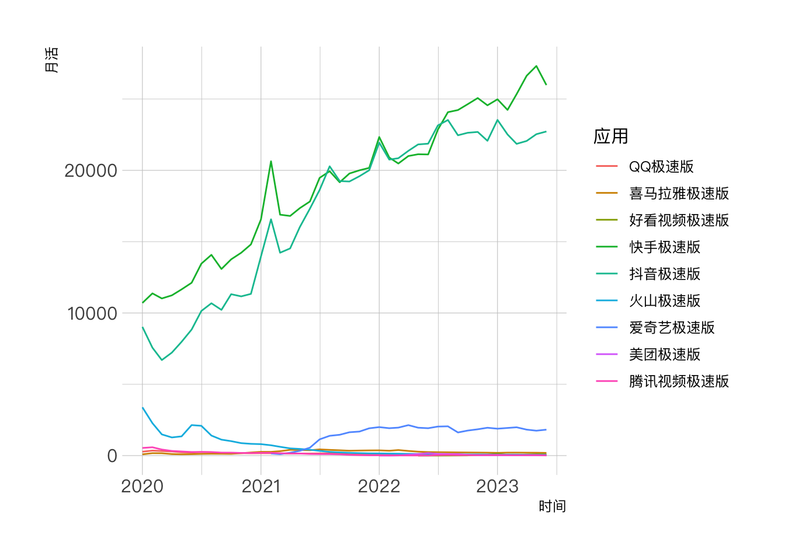
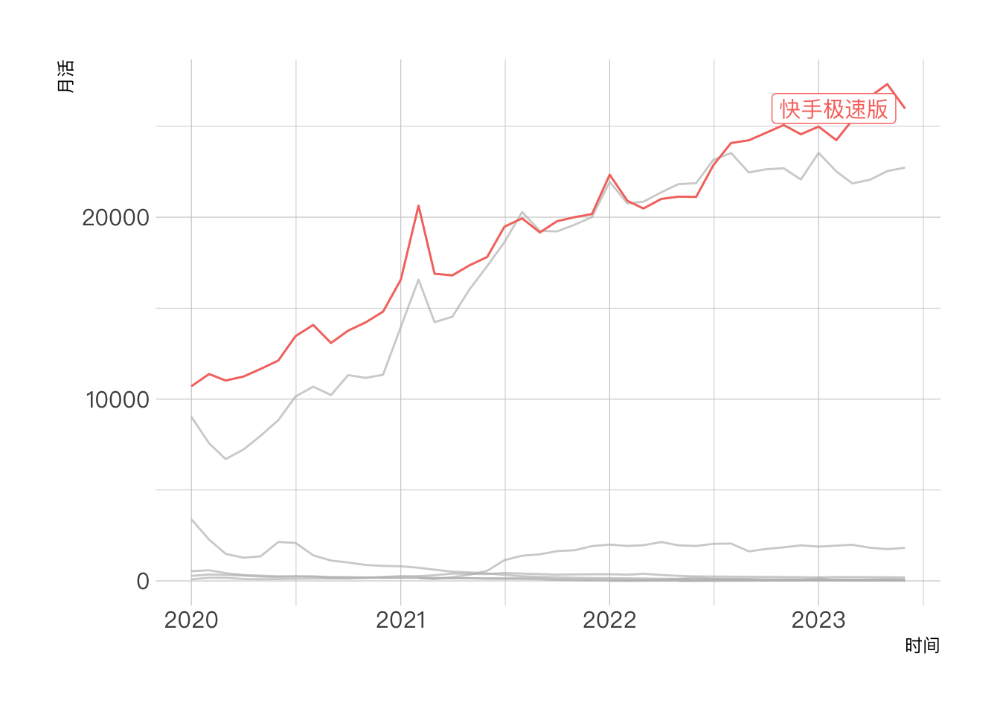
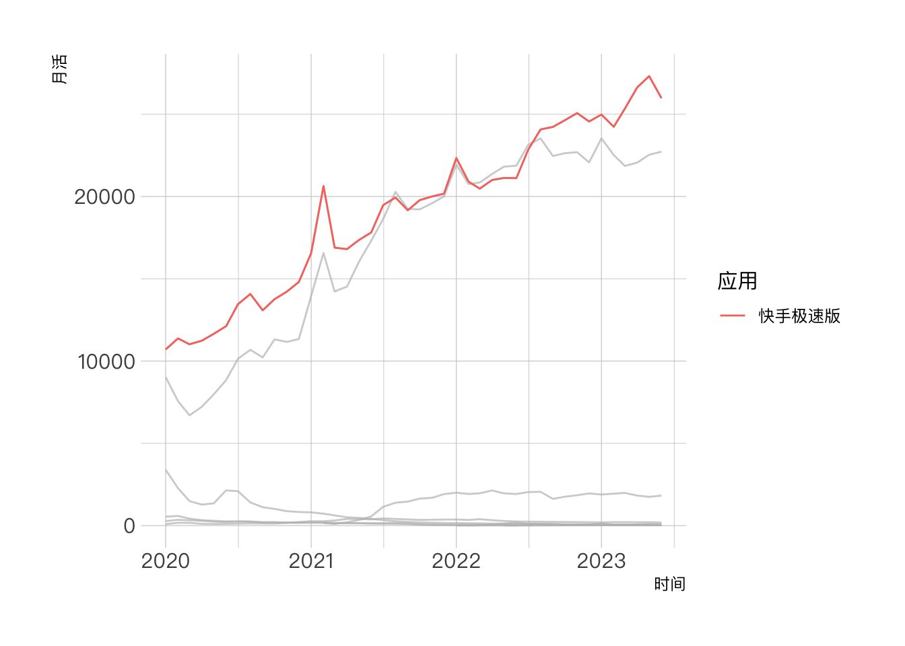
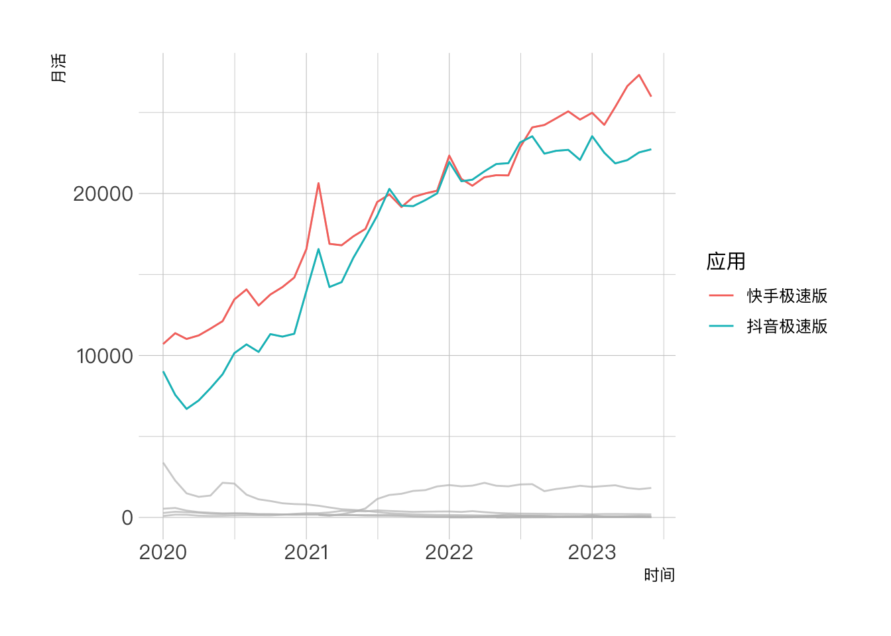
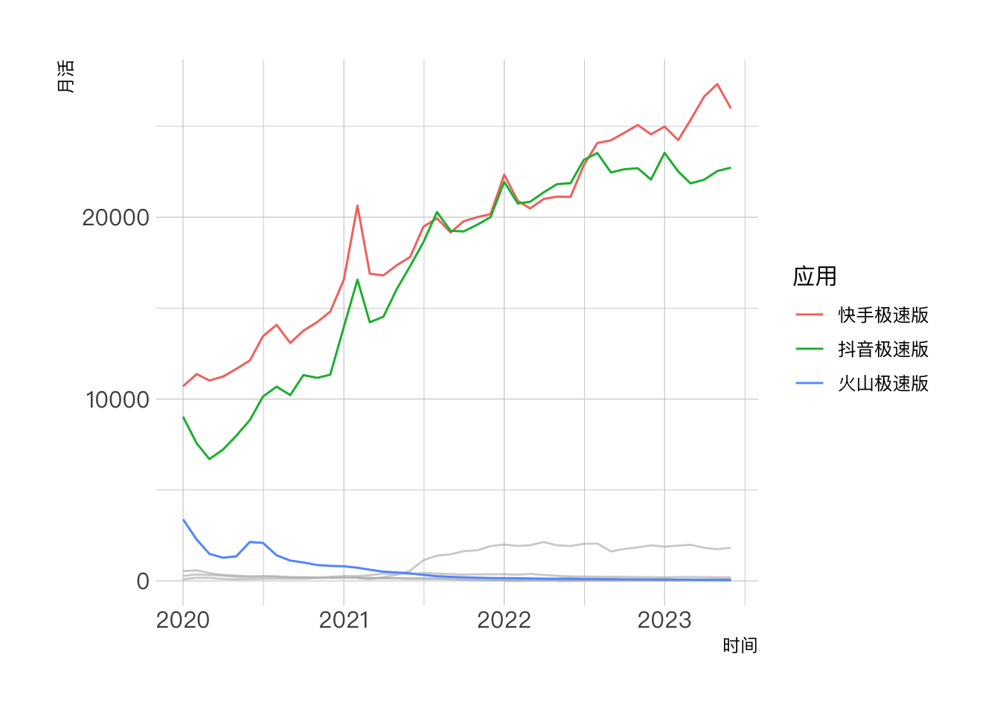
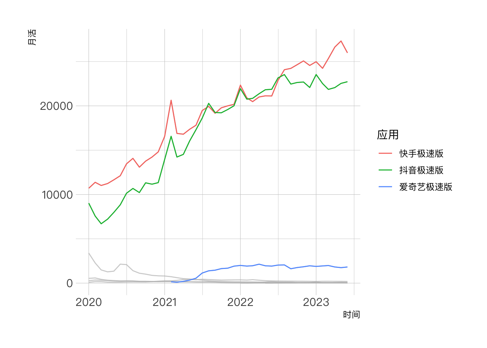
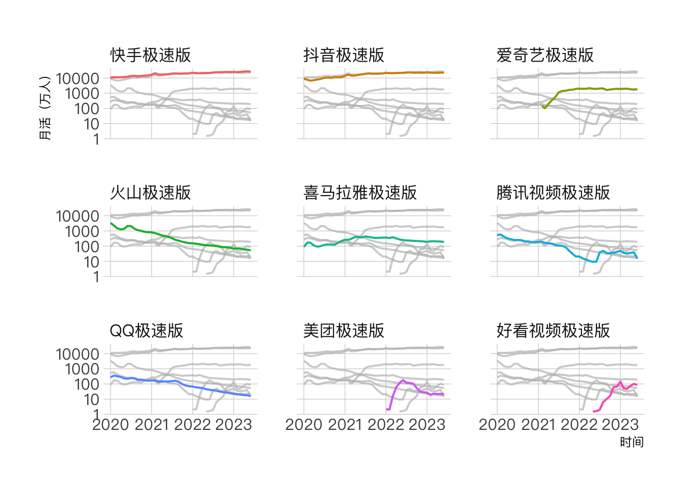

library(tidyverse)
library(gghighlight)
library(hrbrthemes)包引入
数据准备和清洗
先导入数据。
jisu_apps <- readxl::read_xlsx("QM数据.xlsx", sheet = 3) jisu_apps数据集中是不同极速版App的月活变化数据。
knitr::kable(head(jisu_apps))| 时间 | 快手极速版 | 抖音极速版 | 爱奇艺极速版 | 喜马拉雅极速版 | 好看视频极速版 | 火山极速版 | 美团极速版 | QQ极速版 | 腾讯视频极速版 |
|---|---|---|---|---|---|---|---|---|---|
| 2020-01-01 | 10703.60 | 9024.61 | NA | 89.47 | NA | 3387.60 | NA | 274.50 | 537.34 |
| 2020-02-01 | 11374.78 | 7565.89 | NA | 171.90 | NA | 2274.78 | NA | 351.04 | 584.78 |
| 2020-03-01 | 11018.65 | 6699.28 | NA | 165.85 | NA | 1487.27 | NA | 322.12 | 425.26 |
| 2020-04-01 | 11237.10 | 7222.69 | NA | 108.06 | NA | 1273.40 | NA | 287.80 | 327.93 |
| 2020-05-01 | 11655.08 | 7979.54 | NA | 92.20 | NA | 1350.78 | NA | 236.04 | 290.39 |
| 2020-06-01 | 12118.11 | 8839.93 | NA | 101.82 | NA | 2139.89 | NA | 219.02 | 254.15 |
绘图需使用长数据，我们先将宽数据转换为长数据。
jisu_apps_long <- jisu_apps %>%
pivot_longer(cols = 2:10, names_to = "应用", values_to = "月活")knitr::kable(head(jisu_apps_long))| 时间 | 应用 | 月活 |
|---|---|---|
| 2020-01-01 | 快手极速版 | 10703.60 |
| 2020-01-01 | 抖音极速版 | 9024.61 |
| 2020-01-01 | 爱奇艺极速版 | NA |
| 2020-01-01 | 喜马拉雅极速版 | 89.47 |
| 2020-01-01 | 好看视频极速版 | NA |
| 2020-01-01 | 火山极速版 | 3387.60 |
使用 gghighlight 制图
其实整个pacakge里主要使用的就是gghighlight()函数。
先看没有高亮任一线条的样子。
jisu_apps_long %>%
ggplot(aes(x = 时间, y = 月活)) +
geom_line(aes(group = 应用, color = 应用)) +
theme_ipsum(base_family = "PingFang SC")
再来高亮指定名称的线条。其中label_params主要用来调整高亮线条的名称样式，参数和geom_label_repel一致。
jisu_apps_long %>%
ggplot(aes(x = 时间, y = 月活)) +
geom_line(aes(group = 应用, color = 应用)) +
gghighlight(应用 == '快手极速版', label_params = list(family = "PingFang SC")) +
theme_ipsum(base_family = "PingFang SC")
线条名称可以改用图例的形式，而不直接在线条结尾处展现标签。这里需使用use_direct_label参数。
jisu_apps_long %>%
ggplot(aes(x = 时间, y = 月活)) +
geom_line(aes(group = 应用, color = 应用)) +
gghighlight(应用 == '快手极速版', use_direct_label = FALSE) +
theme_ipsum(base_family = "PingFang SC")
还可以使用函数筛选需要高亮的线条。例如通过max(月活) > 10000筛选出月活过亿的应用。
jisu_apps_long %>%
ggplot(aes(x = 时间, y = 月活)) +
geom_line(aes(group = 应用, color = 应用)) +
gghighlight(max(月活) > 10000, use_direct_label = FALSE) +
theme_ipsum(base_family = "PingFang SC")
结合max_highlight参数，指定高亮的最大线条数。
jisu_apps_long %>%
ggplot(aes(x = 时间, y = 月活)) +
geom_line(aes(group = 应用, color = 应用)) +
gghighlight(max(月活, na.rm = TRUE), max_highlight = 3, use_direct_label = FALSE) +
theme_ipsum(base_family = "PingFang SC")
如果有更细粒度的需求，例如2023年月活最高的三个应用，则无法通过gghighlight()内置参数直接实现，需要先计算得到这三个应用的名称。
top3_app_names <- jisu_apps_long %>%
filter(lubridate::year(时间) == 2023) %>%
group_by(应用) %>%
top_n(1, 月活) %>%
ungroup() %>%
arrange(desc(月活)) %>%
top_n(3, 月活) %>%
pull(应用)
# 也可使用行计算，结果和上面一样
# top3_app_names2 <- jisu_apps_long %>%
# filter(lubridate::year(时间) == 2023) %>%
# pivot_wider(names_from = 时间, values_from = 月活) %>%
# rowwise() %>%
# mutate(最大月活 = max(across(where(is.numeric)))) %>%
# ungroup() %>%
# top_n(3, 最大月活) %>%
# pull(应用)
jisu_apps_long %>%
ggplot(aes(x = 时间, y = 月活)) +
geom_line(aes(group = 应用, color = 应用)) +
gghighlight(应用 %in% top3_app_names, use_direct_label = FALSE) +
theme_ipsum(base_family = "PingFang SC")
最后按应用进行分面。
jisu_apps_long %>%
mutate(应用 = fct_reorder(应用, -月活, mean, na.rm = TRUE)) %>%
ggplot(aes(x = 时间, y = 月活)) +
geom_line(aes(group = 应用, color = 应用), size = 0.7) +
# 为了看清趋势采用对数坐标轴
scale_y_log10() +
theme_ipsum(base_family = "PingFang SC", grid = "XY") +
gghighlight(use_direct_label = FALSE) +
facet_wrap(~应用) +
guides(color = FALSE) +
labs(y = "月活（万人）")